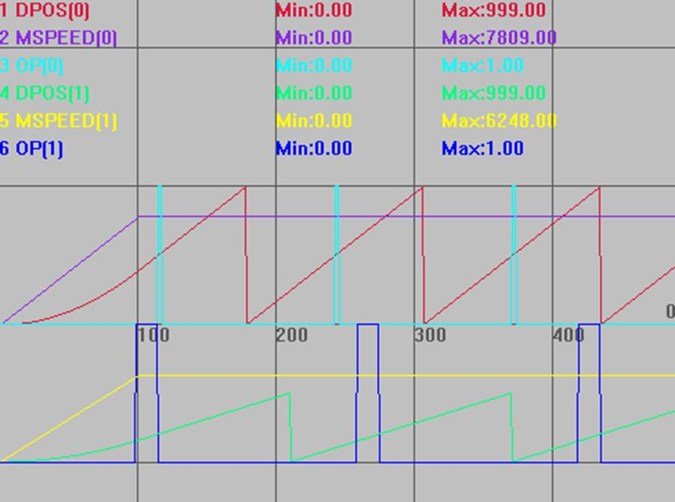
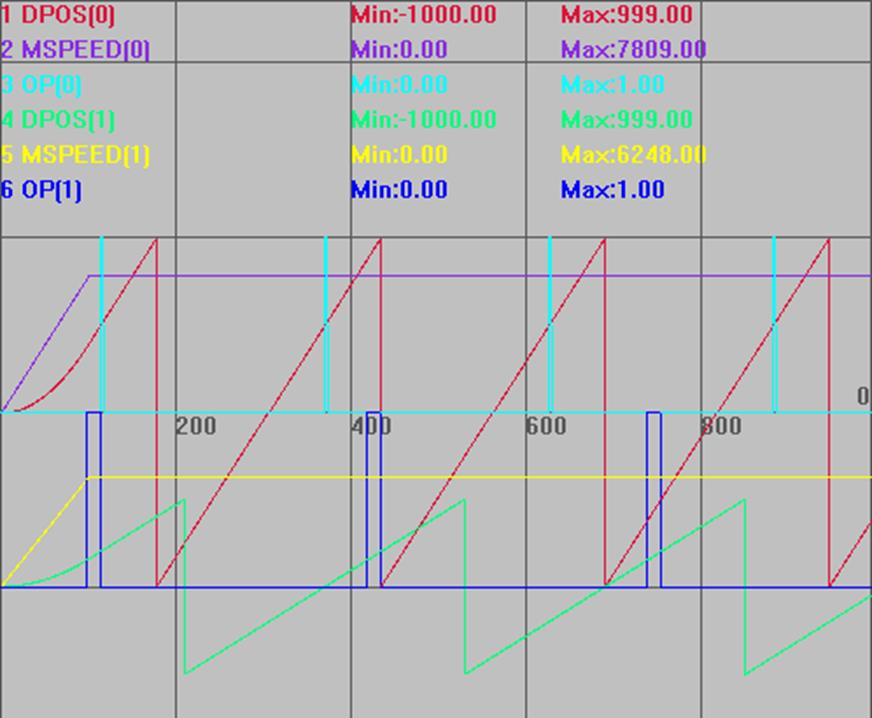

|
类型 |
输入输出指令 |
|
描述 |
根据位置比较来操作输出口。 如果多个PSWITCH操作同一个输出口，需要编号顺序排在一起。 使用脉冲型电机时只有ATYPE为4时才是比较反馈位置(MPOS)，默认出厂的ATYPE为1或7比较的是命令位置(DPOS)。 |
|
语法 |
PSWITCH(num,enable,[,axis,op num,op state,set pos,reset pos]) num：比较器的编号，ZMC1xx系列有16个比较器，编号：0-15 enable：操作比较器的使能 - ON 启动 / OFF 取消 axis：指定要获取位置的轴号 op num：操作的IO编号 op state：输出的状态，1表示在下面位置范围内输出为ON，0表示在下面位置范围内输出为OFF set pos：设定产生输出的起始位置，采用units单位 reset pos：设定输出复位的位置，采用units单位
不同型号控制器支持的比较器个数不同，使用?*max指令打印查看max_pswitch参数确认个数。 |
|
适用控制器 |
通用 |
|
例子 |
RAPIDSTOP(2) WAIT IDLE DELAY(1000) ERRSWITCH = 3 BASE(0,1) '选择轴号 ATYPE=1,1 '脉冲方式步进或伺服 DPOS = 0,0 UNITS = 1,1 '脉冲当量 SPEED = 10000,10000 ACCEL=SPEED(0)*10,SPEED(1)*10 DECEL=SPEED(0)*10,SPEED(1)*10 REP_OPTION=1,1 '设置坐标循环范围为0到+ REP_DIST REP_DIST=1000,1000 TRIGGER MOVE(10000,8000) PSWITCH(0,ON,0,0,ON,500,520) PSWITCH(1,ON,1,1,ON,300,400) END
DPOS(0)垂直刻度1000，无偏移 MSPEED(0)垂直刻度10000，无偏移 OP(0)垂直刻度1，无偏移 DPOS(0)垂直刻度2000，偏移-2000 MSPEED (0)垂直刻度10000，偏移-10000 OP(0)垂直刻度5，偏移-1 
以上例程，仅修改如下指令，得出波形如下图。 REP_OPTION=0,0 '设置坐标循环范围为- REP_DIST到+ REP_DIST
DPOS(0)垂直刻度1000，无偏移 MSPEED(0)垂直刻度10000，无偏移 OP(0)垂直刻度1，无偏移 DPOS(0)垂直刻度2000，偏移-2000 MSPEED (0)垂直刻度10000，偏移-10000 OP(0)垂直刻度5，偏移-1  |
|
相关指令 |